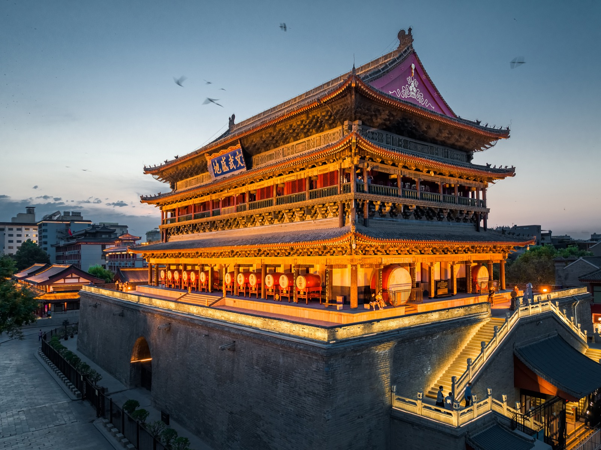
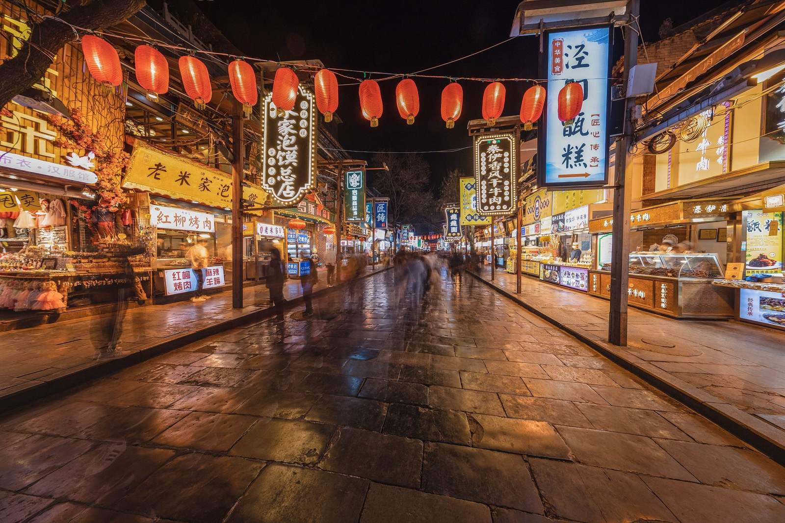
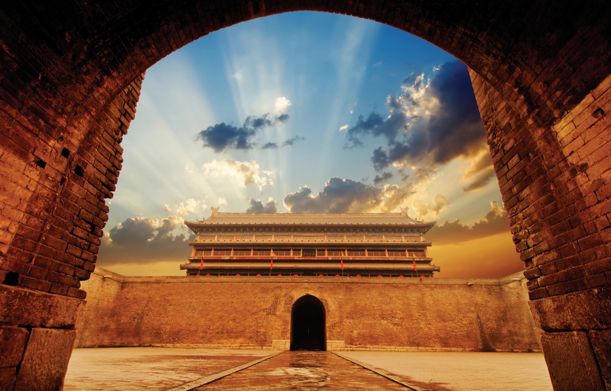
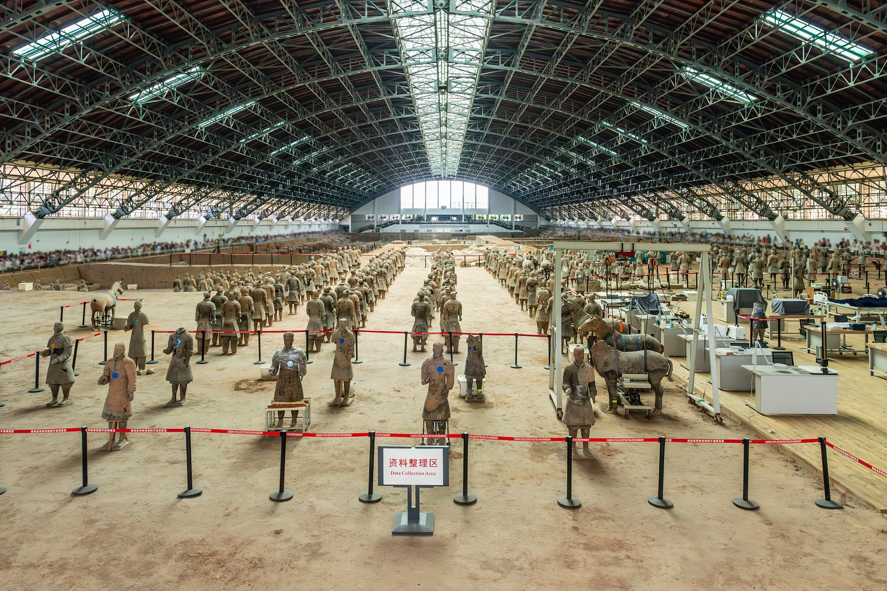
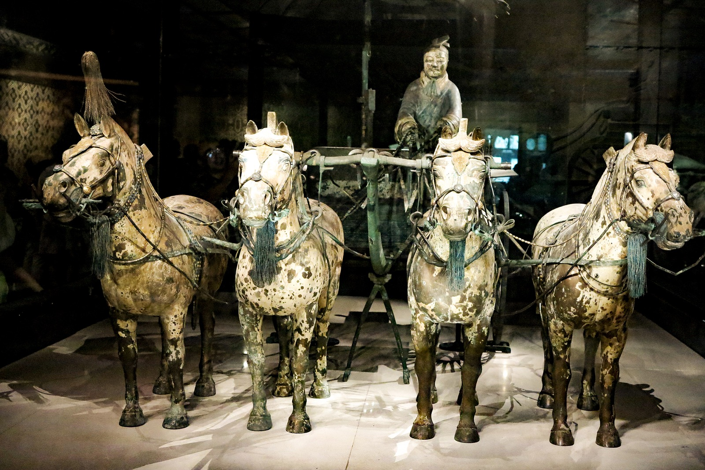
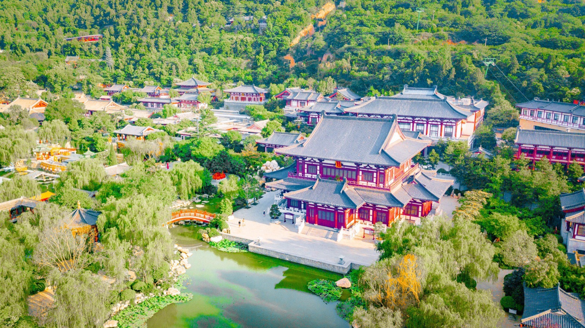
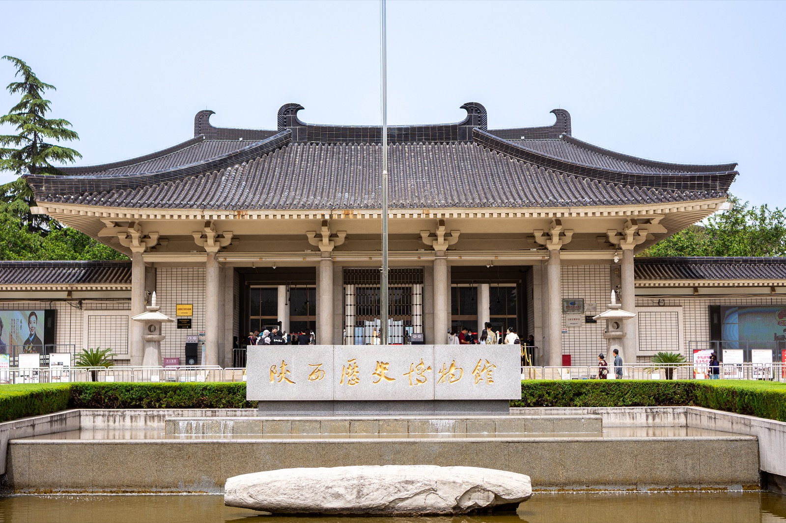
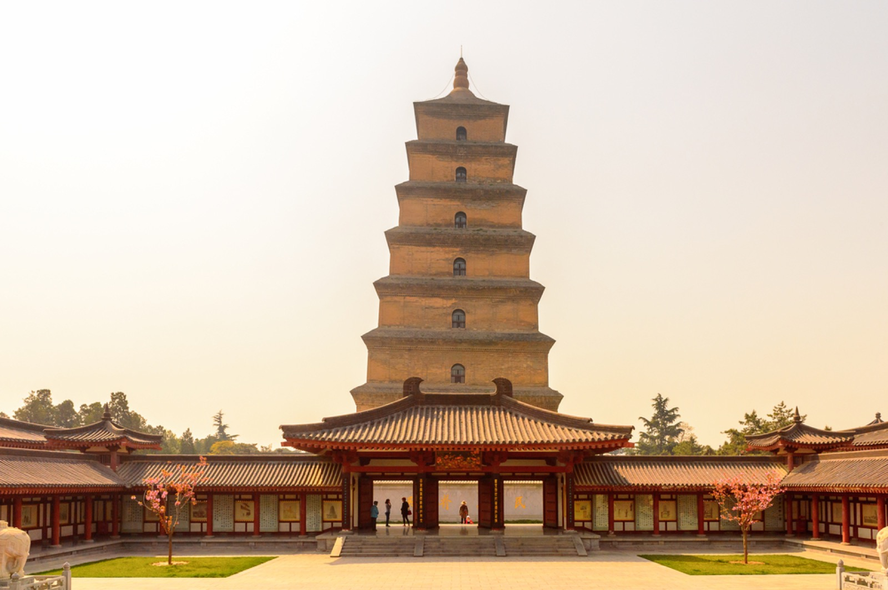

💰 预算参考：¥190–310/晚（一间大床房，2 人入住）。两晚住同一家、不换酒店，位置首选钟鼓楼/南门片区：Day1 所有景点步行可达，去临潼和西安北站都有地铁2号线直达。
| 车次 | 时刻 | 历时 | 终到 | 二等座 | 备注 |
|---|---|---|---|---|---|
| G970（主选） | 14:57 → 20:20 | 5h23m | 北京西 | ¥525（查询时需候补，一等¥840有余票） | 最接近15:00，上午行程完整 |
| G1308 | 14:11 → 20:22 | 6h11m | 北京丰台 | ¥522（余票充足） | 到丰台、最慢，仅作保底 |
| G3932（备选） | 16:01 → 21:16 | 5h15m | 北京西 | ¥525（查询时有余票） | 晚1小时出发，上午可更从容 |
| G362 | 16:10 → 20:45 | 4h35m | 北京西 | ¥577.5（需候补） | 全程最快，候补成功率不确定 |
余票与价格为 2026-09-03 查询结果，实时变动，以 12306 下单时为准。
| 路线 | 推荐方式 | 耗时 | 费用 |
|---|---|---|---|
| 西安北站 → 钟鼓楼酒店 | 地铁2号线直达（钟楼站） | 约35分钟 | ¥5/人；打车¥45–55 |
| 酒店 → 兵马俑 | 打车走连霍高速（推荐） | 40–50分钟 | 约¥110–130+高速费¥15 |
| 酒店 → 兵马俑（省钱） | 地铁1号线→纺织城换9号线→秦陵西D口打车4km | 约1.5小时 | 约¥12/人 |
| 兵马俑 → 华清宫 | 打车（9.5km） | 15–20分钟 | 约¥20–25 |
| 华清宫 → 市区 | 地铁9号线华清池站→纺织城换1号线 | 约1小时 | 约¥7/人 |
| 陕历博 → 大慈恩寺 | 地铁3号线1站 / 打车2km | 10分钟 | ¥3 / 约¥10 |
| 钟鼓楼 → 西安北站 | 地铁2号线直达 | 约35分钟 | ¥5/人；打车¥45–55 |
| 类别 | 人均参考价 | 说明 |
|---|---|---|
| 返程高铁 | ¥525 | G970 二等座（候补）/ 备选 G3932 同价 |
| 酒店住宿（2晚） | ¥266 | 南枫酒店约¥266/晚 × 2晚 ÷ 2人 |
| 景点门票 | ¥371 | 兵马俑120 + 华清宫108 + 城墙53 + 钟鼓楼联票50 + 大慈恩寺10 + 登塔约30；陕历博/大唐不夜城/回坊免费 |
| 餐饮（3天） | ¥300 | 含1顿长安大牌档/陕菜正餐 + 日常泡馍面食小吃 |
| 市内交通/打车 | ¥120 | 兵马俑往返打车分摊 + 地铁 + 其余短途打车 |
| 合计（不含去程） | 约 ¥1,580/人 | 若选一等座返程则再加约 ¥315/人；看《长恨歌》再加约 ¥300+ |
| 路线 | 距离 | 约费用 |
|---|---|---|
| 西安北站 → 钟鼓楼酒店 | 约 16km | ¥45–55 |
| 钟鼓楼 → 兵马俑（走高速） | 约 40km | ¥110–130 + 高速费约¥15 |
| 兵马俑 → 华清宫 | 约 9.5km | ¥20–25 |
| 陕历博 → 大慈恩寺 | 约 2km | ¥10 左右 |
| 钟鼓楼 → 西安北站 | 约 16km | ¥45–55 |
规划过程中的取舍，方便日后调整。
| 决策点 | 选择 | 放弃的方案与原因 |
|---|---|---|
| 住宿片区 | ✅ 钟鼓楼/南门连住2晚 | 不选大雁塔片区：Day1 景点全在老城，且2号线去北站最顺 |
| 兵马俑交通 | ✅ 打车直达（2人分摊只比地铁贵几十元） | 地铁全程1.5小时，早高峰耗体力；游5路2026年8月底刚改线、且假车多 |
| 兵马俑+华清宫顺序 | ✅ 上午兵马俑（开门场）→ 下午华清宫 | 反过来会在10点团队高峰撞上一号坑人流；华清宫下午光线也更柔和 |
| 丽山园 | ➖ 本次放弃（通票免费含） | 再加1.5小时会挤压华清宫；二刷兵马俑时可专门看 |
| 《长恨歌》vs 大唐不夜城 | ✅ 默认大唐不夜城（免费、离酒店近） | 长恨歌口碑极高但看完21:30、门票¥300+，列为可选B方案 |
| 返程车次 | ✅ G970 14:57（最贴近15点） | G362最快但16:10出发且需候补；G1308到北京丰台且最慢 |
| 华山/乾陵 | ❌ 不安排 | 华山需完整1天、乾陵法门寺在西线，2.5天行程不贪多 |